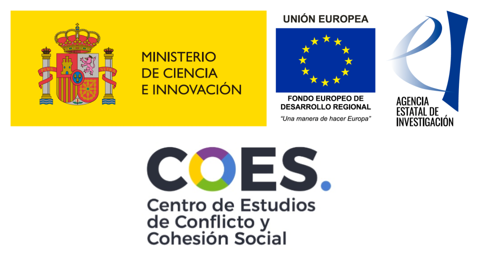

SOGEDI Survey Methodological Manual
Presentation

The incidence of material deprivation and the scarcity of socioeconomic resources have an unequal effect on individuals depending on their sex (Ibarra, 2018). In this regard, in the Latin American context and according to the Feminisation Index of Poor Households, for every 100 men living in poverty, there are 118 women in the same situation (CEPAL, 2022). Despite the fact that this feminisation of poverty indicates an intersectionality between socioeconomic and gender inequality, a significant portion of the literature focusing on the analysis of psychosocial processes related to socioeconomic inequality has overlooked this gender perspective (Bullock, 2013).
For this reason, within the framework of the Socioeconomic and Gender Disparities: A Multi Country Study (SOGEDI) project, we recognize the need to analyse poverty and socioeconomic inequality while incorporating the gender variable. Specifically, through this project, we aim to address our research questions regarding how men and women in poverty are perceived in different Spanish-speaking countries from a cross-cultural perspective, in comparison with men and women in a privileged socioeconomic position, as well as the implications of these social perceptions of men and women in poverty/wealth for reducing gender and socioeconomic gaps in the societies under study.
Thus, the general research objective is to analyse how attitudinal processes, stereotypes, intergroup emotions, behavioral tendencies, and perceptions of social inequality regarding men and women in poverty/wealth in different Spanish-speaking countries relate to support for social assistance measures or social change policies aimed at reducing gender and socioeconomic disparities. To this end, data collection will be conducted, addressing a set of specific thematic blocks that cover various psychosocial processes. These are broken down into the following specific objectives, which will be examined in each of the Spanish-speaking countries under study:
Specific Objective 1 (Attitudes). Analyse the extent to which classism and sexism (from the most hostile to the most paternalistic dimensions) interact as predictors of support for social assistance policies aimed at women (vs. men) in poverty (Sainz et al., 2021).
Specific Objective 2 (Stereotypes, emotions, and behavioral tendencies). Examine how the content of stereotypes related to gender inequality (women vs. men) and socioeconomic inequality (poor vs. rich) influences emotional and behavioral tendencies to identify how these dimensions integrate into specific social perceptions of these groups and their relationship with social change (Cuddy et al., 2007).
Specific Objective 3 (Consequences of gender-based violence). Investigate the extent to which people perceive that women in poverty (vs. women in wealth) experience to a lesser degree the consequences of gender-based violence (i.e., tough skin effect; Cheek & Shafir (2024)).
Specific Objective 4 (Perception of socioeconomic and gender inequality). Assess the extent to which a greater subjective perception of socioeconomic (García-Castro et al., 2022) and gender (Schwartz-Salazar et al., 2024) inequality in different contexts moderates attitudes, stereotypes, and other perceptions related to men/women in poverty/wealth.
Ultimately, through the SOGEDI survey, we will compare the results obtained across different countries with varying characteristics (e.g., higher or lower levels of perceived economic inequality, sexism, etc.), generating models to understand the most relevant psychosocial factors in the feminisation of poverty.
This project has been made possible thanks to the support received from the Centro de Estudios sobre Conflicto Social y Cohesión (COES) and the Agencia Estatal de Investigación through two funded projects led by Mario Sainz (UGR/COES) and Gloria Jiménez-Moya (UC/COES). The use of data from the SOGEDI survey is subject to the citation of the different projects that comprise it (see section Funding, ethics and procedures for data use for specific instructions).